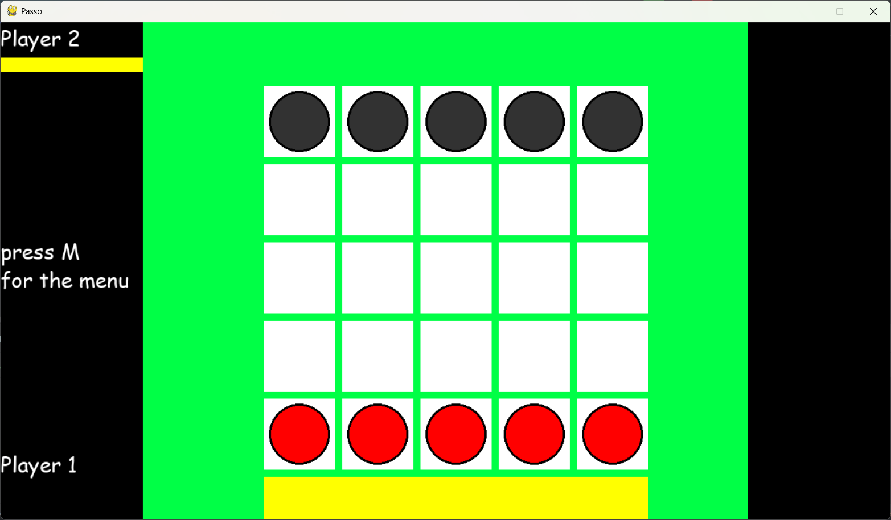
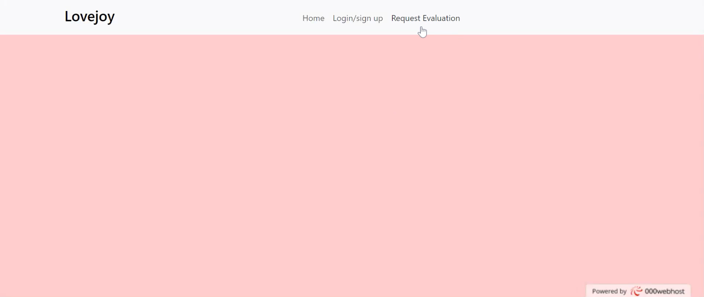

Profile
I am an ambitious and academically accomplished computer science student seeking to secure a position within the computer science industry...
Education & Qualifications
- CCNA (Cisco Certified Network Associate) - 2024-Present
- University of Sussex - BSc (Hons) Computer Science (2021-2024)
- Angmering Sixth Form - A-Levels: Maths (A), CS (B), Physics (C)
- Angmering School - GCSEs incl. Maths (8), Further Maths (A*), CS (5)
Projects
FAB Website
Developed for a textile startup with user registration, SQL database integration, payment security, and mobile optimization using HTML, CSS, JS, PHP, and MySQL.

Passo with AI
Used Python & PyTorch to build a machine learning model that plays Passo with strategic decision-making capabilities. Presented to university evaluators.
Catan (Python Board Game)
Team project to build Catan in Python using Git, with a full game engine and basic AI. Strong emphasis on collaboration and version control (GitHub).

Antique Evaluation Web App
Created a secure user login system with encrypted data, admin dashboard, and image upload features using PHP, SQL, and JavaScript.
Work Experience
- FAB – Web Development Intern (June 2024 – Aug 2024)
- Royal Oak – Front-of-House Server (Jan 2022 – Dec 2024)
- Angmering School – IT Volunteer (Oct 2019 – Apr 2020)
- Maryam’s Kitchen – Distributor & IT Assistant (Sep 2019 – Sep 2021)
Skills
- Languages: Python, Java, C++, JavaScript
- Web: HTML, CSS, PHP, JavaScript, Laravel, Django, React, Angular
- Cloud/Security: AWS, Azure, KQL, PuTTY, Linux, Unix, Bash
- Data: SQL, Oracle, Tableau
- Tools: GitHub, Microsoft 365, WordPress
- Other: Networking, Troubleshooting, Customer Service
Languages
Native English
Activities & Interests
Sports (Tennis, Football, Cycling), Travel, Technology, Culture
References
Available on request.